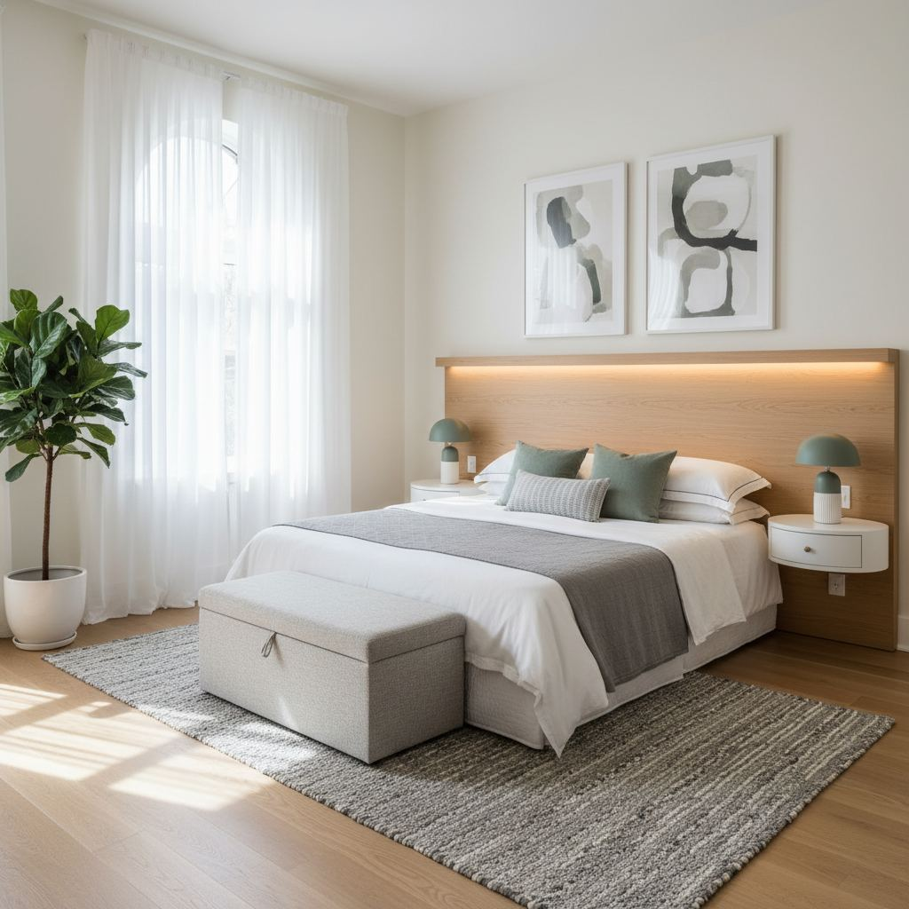

Small Bedroom Layout Ideas That Free Up Floor Space

The single decision that unlocks a small bedroom is where the bed sits. Everything else — nightstands, storage, lighting — follows from that.
Where the bed goes
Center the bed on the longest uninterrupted wall, ideally opposite the window so morning light lands on the covers, not your face. If your room is very narrow, tuck the bed into a corner and use a wall-mounted shelf as a nightstand.
Storage that fits
Use vertical space. Tall, narrow wardrobes hold more than wide low ones and free up floor. Under-bed storage on wheels is a free extra drawer if you have any bed clearance at all.
Lighting without a lamp
Wall-mounted sconces and pendant lights on long cords free up nightstand surface and often look more intentional than a table lamp in a tight room.

Multi-functional Furniture Strategy
When square footage is a luxury, every piece of furniture must earn its keep. Our Styleire design principle for small spaces mandates that at least 50% of your furnishings serve more than one purpose. This isn't about sacrificing style; it's about smart design. Consider a sleek storage ottoman, like West Elm's Mid-Century Tufted Storage Ottoman (starting at $399), which provides comfortable seating, a footrest, and discreet storage for blankets or seasonal clothing. Another excellent investment is a console table with integrated drawers behind the sofa, rather than an end table and a separate chest. We often recommend pieces like Pottery Barn's Benchwright Entryway Console (approximately $699-899), which offer sufficient surface area and crucial drawer space.
Choosing the Right Convertible Pieces
Before purchasing, identify your primary needs. Do you need extra seating and storage? A storage bench at the foot of the bed or under a window often doubles as a landing strip for clothes and hides less-used items. For a really tight space, a wall-mounted drop-leaf study table, such as IKEA's BJURSTA (around $69.99), can serve as a desk when needed and fold flat against the wall, projecting less than 4 inches when closed. Avoid bulky futons; instead, explore well-engineered sofa beds with a slim profile and quality mattress, like those from Room & Board (starting around $1,500). Prioritize items with internal storage or convertible functions that seamlessly integrate into the room's aesthetic.
Vertical Space Maximization: Think Upwards
The ceiling is not merely a lid; in small bedrooms, it’s prime real estate. Leveraging vertical space is paramount to freeing up precious floor area. Begin by assessing your wall height. For rooms with ceilings 8.5 feet or higher, consider installing floating shelves above doorframes (ensure a minimum 10-inch clearance for safe passage) for displaying lightweight decorative items or seldom-used books. Even a single 12-inch deep shelf can dramatically increase storage without encroaching on the room's footprint. We recently utilized a custom 7-foot tall, 18-inch deep shelving unit in a client's 9x10 bedroom, which housed their entire book collection and a few decorative accents, eliminating the need for a separate bulky bookcase.
Designing for High Storage
- Install floor-to-ceiling custom cabinetry or IKEA's PAX system (starting components under $100), maximizing every inch. Integrate a pull-down rod for higher hanging items.
- Utilize wall-mounted bedside tables – simple floating shelves (8-12 inches deep) rather than traditional nightstands. This frees up floor space immediately adjacent to the bed.
- Consider a wall-mounted headboard with integrated shelving. This bespoke solution, often costing between $400-$800 for materials and basic carpentry, eliminates the need for freestanding furniture.
- Hang plants from the ceiling in decorative macrame hangers to draw the eye upwards and add life without occupying surfaces.
A common mistake is forgetting the space above the closet. Add a custom shelf or closed cabinets here for long-term storage of luggage or off-season items. This often overlooked zone can be a storage powerhouse.
Invisible Furniture and Clever Cutouts
Designing a small bedroom isn't just about what you put in; it's about what you seamlessly integrate or cleverly hide. 'Invisible furniture' refers to pieces that blend into their surroundings or have a minimal visual impact. Think acrylic nesting tables (a set of three from CB2 is approximately $299), which can be pulled out as needed but virtually disappear when not in use. Transparent items allow light to pass through, making the room feel more open. Similarly, selecting furniture with thin legs or an open base, rather than solid blocks, creates a sense of airiness by allowing more of the floor to be seen. A cantilevered desk that floats from the wall is a superior choice to a traditional desk with four solid legs.
Maximizing Existing Structures
Look for opportunities to carve out storage or utility from existing architectural elements. If you have a deep window sill, instead of just adorning it, consider having a custom cushion made (expect $100-$300 for a quality custom cushion) to transform it into a reading nook with storage underneath. Recessed wall niches, originally intended for displaying artifacts, can be repurposed with shelves for books or even a small coffee station. For those undergoing renovations, consider building shallow, floor-to-ceiling recessed shelving units into non-load-bearing walls. A 6-inch deep, 24-inch wide recessed unit can store 20-30 paperbacks without occupying any room space whatsoever.
Decor for Expansiveness: Beyond Furniture
Beyond the layout and furniture, strategic decor choices can trick the eye into perceiving a larger space. Mirrors are the oldest trick in the book, but their application matters. A large, unframed mirror leaning against a wall (ensure it's secured with anti-tip straps; costs around $10-20) can visually double the room. Avoid a collection of small mirrors, which can make a space feel cluttered. Instead, opt for one statement mirror, ideally placed opposite a window to reflect natural light. We recommend a full-length mirror at least 30 inches wide and 70 inches tall for maximum impact, typically costing between $150-$400 depending on quality and frame.
Color, Pattern, and Line
- Use a monochromatic or analogous color scheme (colors next to each other on the color wheel) with light, cool tones. Pale grays, whites, and soft blues are ideal for walls and large textiles.
- Avoid busy patterns on walls or large furniture pieces. If using pattern, choose subtle textures or small-scale designs.
- Opt for window treatments that match the wall color and extend floor to ceiling. Mount curtain rods several inches above the window frame to draw the eye upwards, using a rod at least 6-12 inches wider than the window itself.
- Incorporate decor items with clean lines and minimal ornamentation. Excessive tchotchkes can quickly overwhelm a small space.
The goal is to create visual flow and reduce interruptions. Even floor-level decor like area rugs should be placed to define zones without breaking up the floorplan, ideally a rug large enough for the front two feet of the bed and nightstands to sit upon.
The Under-the-Bed Rethink
The space beneath your bed is often an untapped goldmine for storage. Traditionally, this meant shoving random boxes under there, but modern solutions are far more sophisticated and organized. The first step is to ensure your bed frame provides adequate clearance. A 12-inch under-bed clearance is ideal for most storage bins, while a 16-inch clearance allows for taller items or even a trundle bed. If your current frame is too low, consider investing in risers (around $15-30 for a set of four) or an entirely new platform bed with integrated drawers. A full-size bed frame with four large built-in drawers typically ranges from $400-$800, a worthy investment for reclaiming floor space.
Smart Under-Bed Storage Solutions
- Invest in long, flat, rigid-sided wheeled containers designed specifically for under-bed use, costing $20-$50 each. These prevent sagging and allow easy access.
- Store off-season clothing in vacuum-sealed bags within these bins. This compresses items and prevents dust accumulation.
- For small items like accessories or linens, use fabric drawer organizers inside larger bins. Label everything clearly to avoid unnecessary digging.
- Avoid open baskets under the bed, as they collect dust and make the space feel messier. Opt for lidded or zippered containers.
The critical error many make is using this space for items they rarely need, turning it into a black hole. Prioritize storing seasonal items, extra bedding, or travel gear. This keeps frequently accessed items in more convenient locations and ensures the under-bed zone remains highly functional and organized.
Key takeaways
- Bed on the longest wall, ideally opposite the window.
- Tall storage beats wide storage.
- Sconces free up nightstand space.
Frequently asked questions
Can I put a bed under a window?
Yes, if the window is well-sealed and you like the light. A tall headboard helps close the visual gap between mattress and window frame.

Sophia Bennett is a certified interior stylist and the senior editor at Styleire. She has spent more than eight years helping homeowners and renters create warm, functional interiors, with hands-on experience across small city apartments and family homes. Her work has been informed by close collaboration with independent designers, craftspeople, and product testers.
View full profile →Related reading

Cozy Bedroom Ideas: 12 Changes That Actually Make a Difference
Cozy is a feeling built from small, specific choices. Here are the twelve that make the biggest difference.

How to Choose Bedding That Actually Feels Good
Thread count is mostly noise. Here is what actually determines how bedding feels.